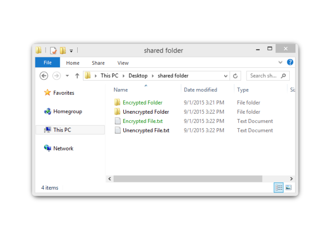
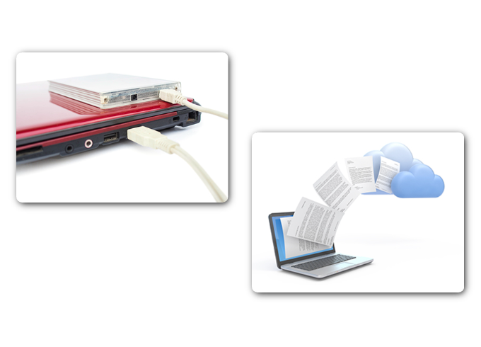
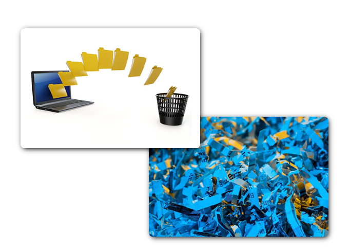

Encripte sus datos
Introducción
Bienvenido
Protección de sus datos y de su seguridad
Este capítulo se centra en sus dispositivos personales y sus datos personales. Incluye crear contraseñas seguras y usar redes inalámbricas de manera segura. También analiza el mantenimiento de sus datos protegidos.
Este capítulo abarca brevemente las técnicas de autenticación para ayudarlo a mantener sus datos protegidos. Además, cubre las opciones para mejorar la seguridad de sus datos en línea con sugerencias sobre qué hacer y qué no hacer en línea.
En este video, muestra lo vulnerable que somos ante estos ataques:
Protección de sus datos
Proteja sus datos y su red
Proteja sus dispositivos informáticos
Sus dispositivos informáticos almacenan sus datos y son el portal hacia su vida en línea. La siguiente es una breve lista de pasos a seguir para proteger sus dispositivos informáticos contra intrusiones:
Mantenga el firewall encendido: ya sea un firewall de software o un firewall de hardware en un router, el firewall debe estar activado y actualizado para evitar que los hackers accedan a sus datos personales o empresariales.
Utilice un antivirus y antispyware: el software malicioso, como virus, troyanos, gusanos, ransomware y spyware, se instala en los dispositivos informáticos sin su permiso para obtener acceso a su computadora y sus datos.
Administre su sistema operativo y navegador: los hackers siempre están intentando aprovechar las vulnerabilidades en sus sistemas operativos y navegadores web. Para proteger su computadora y sus datos, establezca los parámetros de seguridad en su computadora o navegador en medio o alto.
Proteja todos sus dispositivos: sus dispositivos informáticos, ya sean PC, PC portátiles, tablets o smartphones, deben estar protegidos con contraseña para evitar el acceso no autorizado. La información almacenada debe estar cifrada, especialmente en el caso de datos sensibles o confidenciales.
Use las redes inalámbricas en forma segura
Las redes inalámbricas permiten que los dispositivos habilitados con Wi-Fi, como computadoras portátiles y tablets, se conecten a la red por medio de un identificador de red conocido como identificador de conjunto de servicios (SSID). Para evitar que los intrusos ingresen en su red inalámbrica doméstica, el SSID predeterminado y la contraseña predeterminada para la interfaz de administración en el navegador web deben cambiarse.
En octubre de 2017, se descubrió una falla de seguridad en el protocolo WPA2. Esta falla permite a un intruso descifrar la encriptación entre el router inalámbrico y el cliente inalámbrico, lo que permite que este tenga acceso al tráfico de red y lo manipule. Esta vulnerabilidad puede ser atacada utilizando el Ataque de reinstalación de clave (KRACK, Key Reinstallation Attack).
Utilice contraseñas únicas para cada cuenta en línea
Posiblemente tenga más que una cuenta en línea y cada cuenta debe tener una contraseña única. Son muchas contraseñas para recordar. Sin embargo, la consecuencia de no usar contraseñas seguras y únicas los deja a usted y sus datos vulnerables ante los delincuentes cibernéticos.
Si los delincuentes obtienen su contraseña mediante la suplantación de identidad, por ejemplo, intentarán ingresar en sus otras cuentas en línea. Si solo utiliza una contraseña para todas las cuentas, pueden ingresar en todas estas, robar o borrar todos sus datos, o hacerse pasar por usted.
Consejos para elegir una buena contraseña:
- No use palabras del diccionario o nombres en ningún idioma.
- No use errores ortográficos comunes de palabras del diccionario.
- No use nombres de equipos o cuentas.
- De ser posible, use caracteres especiales como ! @ # $ % ^ & * ( ).
- Utilice una contraseña con diez o más caracteres.
Use una frase en lugar de una palabra como contraseña.
Para evitar el acceso físico no autorizado a los dispositivos informáticos, use frases en lugar de palabras como contraseñas. Es más fácil crear una contraseña larga en forma de frase que en forma de palabra porque generalmente está en el formato de oración en lugar de palabra.
Sugerencias para elegir una buena frase:
- Elija una oración que signifique algo para usted.
- Agregue caracteres especiales, como ! @ # $ % ^ & * ( ).
- Mientras más larga, mejor.
- Evite oraciones comunes o famosas, por ejemplo, letras de una canción popular.
Recientemente, el Instituto Nacional de Normas y Tecnología (NIST) de los Estados Unidos publicó requisitos de contraseña mejorados. Las normas del NIST están destinadas a aplicaciones del gobierno, pero también pueden servir como normas para otras.
Resumen de las nuevas pautas:
- Esta debe tener una longitud mínima de 8 caracteres, pero no más de 64 caracteres.
- No utilice contraseñas comunes ni que se puedan adivinar con facilidad; por ejemplo, contraseña, abc123.
- No hay reglas de composición, como el tener que incluir números y letras mayúsculas y minúsculas.
- Mejore la precisión de escritura permitiendo que el usuario vea la contraseña mientras la escribe.
- Se permiten todos los caracteres de impresión y espacios.
- Sin pistas de contraseña.
- Sin fecha de caducidad periódica o arbitraria de la contraseña.
- Sin autenticación basada en conocimientos, tales como información de preguntas secretas compartidas, datos de marketing, historial de transacciones.
Mantenimiento de datos
Importancia del mantenimiento de la BDD
El desempeño de la base de datos está basado en múltiples factores, entre los cuales se destaca poder procesar consultas rápidamente. Esto puede ser facilitado usando índices. Los índices son como los índices de un libro, proveen accesos directos a donde la información está localizada. De otra manera, se tendría que comenzar a leer el libro desde el inicio hasta encontrar la información requerida. Es lo mismo con las bases de datos, si no fuera por los índices, por cada consulta habría la necesidad de un escaneo de la tabla entera.
Al insertar nuevos datos en las BDD, las páginas de índices se llenan gradualmente, el número de registros de datos de las tablas, crece con el tiempo, lo cual tiene un impacto en el desempeño y un uso más alto de memoria y CPU. Según la cantidad de espacio de almacenamiento disponible, es importante planificar y realizar regularmente mantenimientos y ajustes periódicos de las BDD, para mantener el rendimiento óptimo del sistema y de vez en cuando es preciso, se eliminen datos para que las tablas sigan teniendo un tamaño razonable.
Encripte sus datos
¿Qué es la encriptación?
La encriptación es el proceso de conversión de la información a un formato que una parte no autorizada no puede leer. La encriptación en sí misma no evita que una persona intercepte los datos. La encriptación solo puede evitar que una persona no autorizada vea o acceda al contenido.
El sistema de encriptación de archivos (EFS, Encrypting File System) es una característica de Windows que permite encriptar datos. El EFS está directamente vinculado a una cuenta de usuario determinada. Solo el usuario que cifró los datos puede acceder a estos una vez encriptados con el EFS. Para encriptar datos con EFS en todas las versiones de Windows, siga estos pasos:
Paso 1: Seleccione uno o más archivos o carpetas.
Paso 2: Haga clic derecho en los datos seleccionados y en >Propiedades.
Paso 3: Haga clic en Opciones avanzadas...
Paso 4: Seleccione la casilla de verificación Encriptar contenido para proteger datos.
Paso 5: Las carpetas y los archivos encriptados con el EFS se muestran en verde, como se muestra en la ilustración.

Realice un respaldo sus datos
Puede decidir copiar todos sus datos en un dispositivo de almacenamiento conectado a la red (NAS), un disco duro externo simple o puede seleccionar solo algunas carpetas importantes para hacer un respaldo en unidades de memoria USB, CD/DVD o incluso cintas. En dicho escenario, es usted el propietario y es totalmente responsable del costo y el mantenimiento de los equipos del dispositivo de almacenamiento. Si contrata un servicio de almacenamiento en la nube, el costo depende de la cantidad de espacio de almacenamiento que necesita. Con un servicio de almacenamiento en la nube, como Amazon Web Services (AWS), tendrá acceso a sus datos de respaldo siempre que tenga acceso a su cuenta. Cuando contrata servicios de almacenamiento en línea, es posible que deba ser más selectivo respecto de los datos que respalda debido al costo del almacenamiento y las constantes transferencias de datos en línea. Uno de los beneficios de guardar un respaldo en una ubicación alternativa es que es seguro en caso de incendio, robo u otro desastre, excepto que falle el dispositivo de almacenamiento.

Eliminación de sus datos en forma permanente
Para borrar datos de modo que no sean recuperables, los datos deben sobrescribirse con unos y ceros varias veces. Para evitar la recuperación de los archivos eliminados, es posible que deba utilizar herramientas diseñadas específicamente para hacerlo. El programa SDelete de Microsoft (para Vista y versiones posteriores) reclama tener la capacidad de eliminar los archivos confidenciales por completo. Shred para Linux y Secure Empty Trash para Mac OSX son algunas herramientas que aseguran proporcionar un servicio similar.
La única forma de estar seguros de que los datos o los archivos no son recuperables es destruir físicamente el disco duro o el dispositivo de almacenamiento. Muchos delincuentes cometen la insensatez de pensar que sus archivos son impenetrables o irrecuperables.

Protección de la privacidad en línea
Autenticación sólida
Autenticación de dos factores
Los servicios en línea más populares, como Google, Facebook, Twitter, LinkedIn, Apple y Microsoft, utilizan la autenticación de dos factores para agregar una capa adicional de seguridad para los inicios de sesión de la cuenta. Además del nombre de usuario y la contraseña, o un patrón o número de identificación personal (PIN), la autenticación de dos factores requiere un segundo token, por ejemplo:
Un objeto físico: una tarjeta de crédito, una tarjeta de cajero automático, un teléfono o un control.
Escaneo biométrico: huellas digitales, impresión de la palma o reconocimiento de voz o de rostro.
OAuth 2.0
Open Authorization (OAuth) es un protocolo de estándar abierto que permite que las credenciales de los usuarios finales tengan acceso a aplicaciones de terceros sin exponer las contraseñas de los usuarios. OAuth actúa como intermediario para decidir si los usuarios finales pueden acceder a aplicaciones de terceros. Por ejemplo, supongamos que desea acceder a la aplicación web XYZ y no tiene una cuenta de usuario para acceder a esta aplicación web. Sin embargo, XYZ tiene la opción de permitirle iniciar sesión con las credenciales de la red social ABC. Por lo que puede acceder al sitio web XYZ con el inicio de sesión de la red social ABC.
¿Comparte demasiada información?
No comparta demasiado en las redes sociales
Si desea mantener su privacidad en las redes sociales, comparta la menor información posible. No debe compartir información como su fecha de nacimiento, dirección de correo electrónico o número de teléfono en su perfil. La persona que necesita conocer su información personal probablemente ya la sepa. No complete su perfil de redes sociales en su totalidad, solo proporcione la información mínima requerida. Además, verifique las configuraciones de sus redes sociales para permitir que solo las personas que conoce vean sus actividades o participen en sus conversaciones.
Privacidad del correo electrónico y el navegador web
Cada día, millones de mensajes de correo electrónico se utilizan para comunicarse con amigos y realizar negocios. El correo electrónico es una manera conveniente de comunicarse rápidamente. Cuando envía un correo electrónico, es similar a enviar un mensaje mediante una tarjeta postal. El mensaje de la tarjeta postal se transmite a plena vista de cualquier persona que pueda observarlo; el mensaje de correo electrónico se transmite en texto sin formato y es legible para cualquier persona que tenga acceso. Estas comunicaciones además pasan por diferentes servidores en la ruta hacia su destino. Incluso si borra los mensajes de correo electrónico, los mensajes pueden archivarse en los servidores de correo durante algún tiempo.
Resumen
Conclusión
Protección de sus datos y de su seguridad
Este capítulo se centró en sus dispositivos y sus datos personales. Incluyó sugerencias para proteger sus dispositivos, crear contraseñas seguras y usar redes inalámbricas de manera segura. Cubrió los respaldos de datos, el almacenamiento de datos y la eliminación de datos de manera permanente.
Se analizaron técnicas de autenticación para ayudarlo a mantener sus datos seguros. Cubrió brevemente cuán fácil es compartir demasiada información en las redes sociales y cómo evitar este riesgo de seguridad.
En este video te dejamos lo mas básico para repasar lo aprendido
Project-Id-Version: eXeLearning 2.6Report-Msgid-Bugs-To: eXe Translations